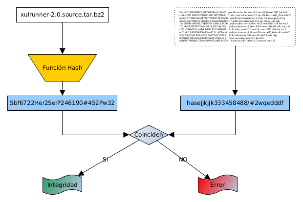
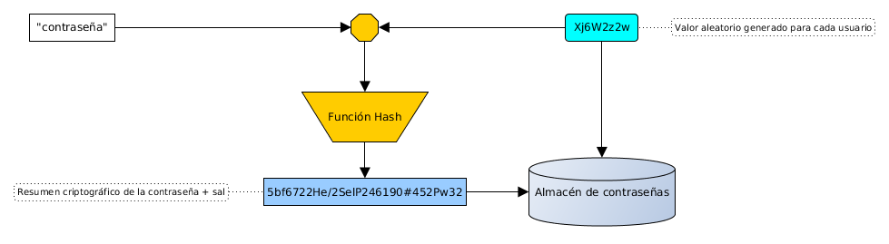

Algoritmos resumen
Mikel Egaña Aranguren
Algoritmos resumen (Digestión)
Generan un criptograma que representa el contenido original:
- De tamaño constante, independientemente del contenido original
- Representa todo el contenido original
- Si el contenido cambia lo más minimo cambia completamente
- Para el mismo contenido, siempre genera el mismo
Algoritmos resumen
Funciones hash:
- No tienen inversa (one-way function): no se puede obtener el contenido desde el criptograma
- No se puede descifrar, ya que no cifra (resume)
Algoritmos resumen: funciones
Certificar la integridad de la información
Almacenar contraseñas
Identificador de datos o archivos
Prueba de trabajo (Bitcoin)
Implementar la firma digital (Cifrado asimétrico: firma digital)
Certificar la integridad de la información

Almacenar contraseñas

Almacenar contraseñas: identificación

Almacenar contraseñas: problemas
Todo el mundo con la misma contraseña tiene el mismo hash
Se pueden precalcular los hashes de todo el espacio de contraseñas
Almacenar contraseñas: problemas
Solución: usar "sal" (Salt), o semilla

Almacenar contraseñas: problemas
Identificación con sal

Almacenar contraseñas: problemas
Ventajas del uso de sal:
- La misma clave tiene una codificación distinta cada vez
- Dificulta los ataques por fuerza bruta
Si roban la BBDD con las claves y la sal, no aporta nada
Almacenar contraseñas: implementación
Linux:
- Ubicación: /etc/shadow
- Obtención: sudo cat /etc/shadow
- Formato: user:$Algoritmousado$sal$ResumenCriptográfico:A:B:C:D:E:F:
Almacenar contraseñas: implementación
Formato Linux:
- Algoritmousado: 1: MD5; 2: Blowfish; 3: NT; 5: SHA-256; 6: SHA-512
- Sal: cadena aleatoria para derivar las claves
Almacenar contraseñas: implementación
Formato Linux:
- A: número de días sin cambiar la clave (desde 01/01/1970)
- B: número de días hasta poder cambiar la clave
- C: número máximo de días que se puede estar sin cambiar la clave
Almacenar contraseñas: implementación
Formato Linux:
- D: número de días de antelación con el que hay que avisar al usuario de que tiene que cambiar la clave
- E: número de días desde que caduque la contraseña hasta que se desactive la cuenta
- F: número de días hasta que la cuenta se desactive (desde 01/01/1970)
Identificador de datos o archivos
Sistemas de control de versiones como Git para identificar contenido mediante sha1sum
Magnet URIs en intercambio de archivos (Ej. Magnet Links en BitTorrent)
Hash table en muchos lenguajes de programación
Algoritmos resumen más conocidos
MD5
SHA-3
RIPEMD
MD5
Criptográficamente roto pero todavía en uso, sobretodo para integridad
Hashes de 128 bits
SHA-3
SHA-0..2 estaban basados en MD5, SHA-3 no
224...512 bits
Open SSL, Ethereum, ...
RIPEMD
128, 160, 256, 320 bits
Bitcoin usa RIPEMD-160
Algoritmos resumen: problemas
- Colisiones: dos textos distintos que generen el mismo resumen
- Ataques que debilitan el algoritmo
Algoritmos resumen: soluciones
- Usar otros algoritmos que generan resúmenes criptográficos más largos
- Nuevos algoritmos